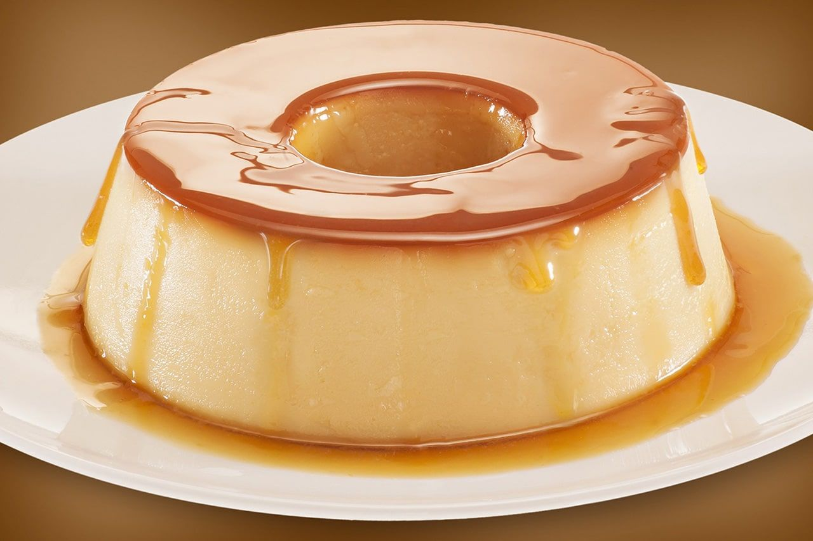

Pudim de leite

Esta é a melhor e mais fácil receita que você vai encontrar. O segredo é misturar muito bem mas com calma (para não deixar muito ar entrar na receita).
Ingredientes da Massa:
- 1 lata de leite condensado
- 1 lata de leite (mesma medida da lata de leite condensado)
- 3 ovos inteiros
Ingredientes da Calda:
- 1 xícara (chá) de açúcar
- 1/2 xícara de água
Modo de Preparo:
Calda:
- Derreta o açúcar na panela até ficar moreno, acrescente a água e deixe engrossar.
- Coloque em uma forma redonda e reserve.
Massa:
- Primeiro, bata bem os ovos no liquidificador.
- Acrescente o leite condensado e o leite, e bata novamente.
- Despeje a massa do pudim na forma, por cima da calda.
- Asse em forno médio por 45 minutos, com a assadeira redonda dentro de uma maior com água (banho-maria).
- Espete um garfo para ver se está bem assado.
- Deixe esfriar e desenforme.
Comentários dos leitores:
Maria: Fiz ontem e ficou maravilhoso!